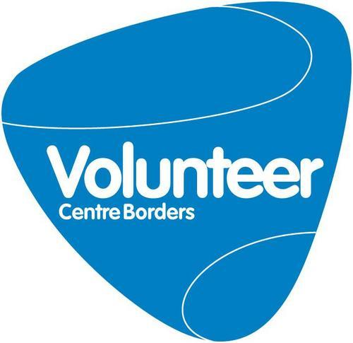
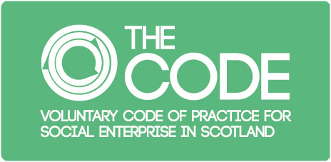
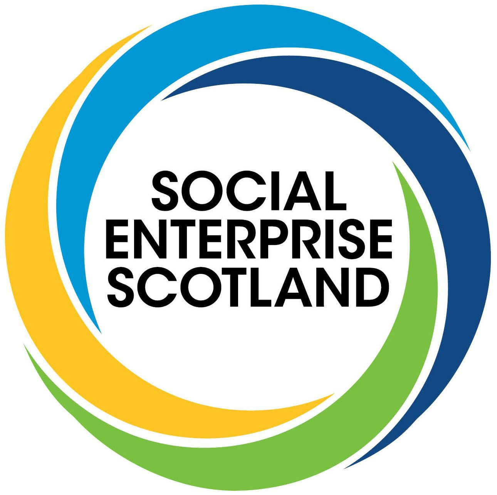
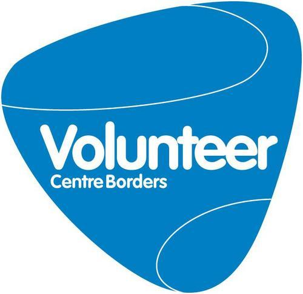
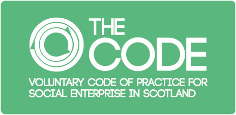
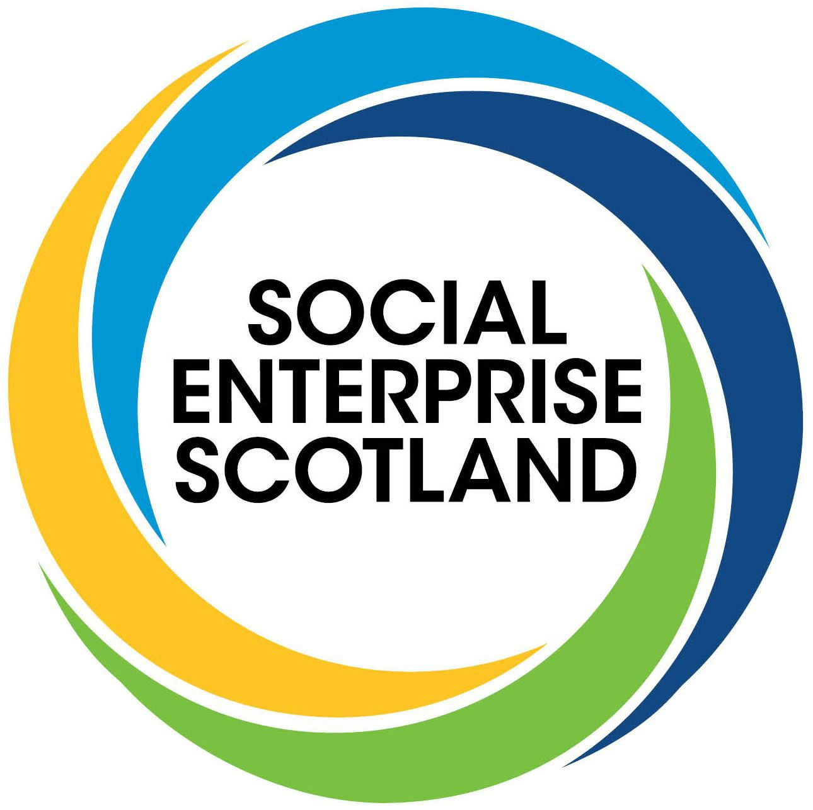

Who We Are
Our Mission Statement:
YOU CAN COOK will encourage and empower local communities to make informed choices about their food and health while allowing them to make these changes at their own pace.
We will enable participants to engage in a social and educational activity through learning basic techniques and skills in cookery.
Meet the Team!
Bosco Santimano,
Executive Director
Born in Bombay a vibrant city full of life, colours, music, films, culture and cuisines,
it was the perfect foundation to introduce my passion for good food in Scotland.
From a very early
age I was surrounded by family and friends who excelled in home cooking. My inspiration for food comes
mainly from my mother who went on to become the best cook in the family. I am also very passionate about
social justice and through my investigative research and journalism highlight issues that are important to
society’s well-being both locally and globally.
Guest Lecturer at Edinburgh University for MSc in Environmental Sustainability
(Postgraduate).
Emily Macinnes,
Director
With a passion for a social justice and localised food systems I am excited to have come
on board the You Can Cook team and join Bosco’s vision for a healthy Scotland.
My background is in
photojournalism and filmmaking, beginning at 17 when I moved to Peru to live and work in a children’s home.
Whilst there I began photographing life around me and it was there that I realised the potential for
combining my interest in politics and sociology with my love for storytelling. Since then I have worked to
document the stories of both international NGOs and local grassroots organisations across several
continents. I have had the privilege to live and work in communities in Ghana, Palestine, Colombia and more
recently in refugee camps in Serbia and Greece - learning and growing deeply from a diversity of human
interactions and connections in some of the most marginalised communities in the world.
Several years
ago I made the less familiar decision to put my roots back down in Scotland in order to work on stories
closer to home. Since then, I have had the joy of documenting the wonderful fruits of Bosco’s labour, in the
form of community cookery classes and gardening sessions in schools and centres across the Scottish Borders.
Alex Wilson,
Community Cook/Steering Group
I come from a big family that loves to eat and talk about food. We are always planning the
next meal! I am a mother of two and love cooking everyday at least once. We talk about food and where it
comes from all the time and sit together to eat as a family at the end of each day, usually in a
hurry.
I was born in Peru and so have always tasted different food. Different to the UK but normal to
Peru. We all get in to a place with our food that is secure but when we step out of the norm we get a great
experience. I love to try new things especially when recommended by someone. I have lived in London for 22
years and there are so many tastes to experience there.
Alex Smithson,
Community Gardener
When I was a child, my parents let me plan a section of the garden at home and I planted
roses and topiary, blossom trees and flowers. It was such a privilege to be able to shape the garden, and to
watch it grow and mature. That was just the start, I've laid out a flower garden from scratch and learned to
propagate my own plants. I now have a RHS gardening qualification.
I love to create, and I'm always
crafting something new! I try to share the magic of gardens, plants and wildlife with young volunteers in
the community garden; combining the garden club's ideas and designs with good horticultural practice to
learn and play in a garden setting.
Colleen McCulloch,
Steering Group
I love food – growing it, cooking it, and most of all eating it! My Mum and both Grannies
played a big part in enthusing and teaching me about food and cooking when I was growing up, so I’ve always
enjoyed having a go and trying new ideas (even though I didn’t always get it right first time). I’ve
travelled and worked abroad a fair bit too, and part of the adventure for me is always trying new flavours
in different places - however I think simple Scottish cooking is still my favourite. I also love being
outdoors – and any excuse for a picnic!
My background is quite mixed, but involves working in the
(organic) farming sector, research ecology (when I’m not in Scotland I study wild sheep in Mongolia – where
the local diet involves a lot of mutton dishes!), and a number of community groups for which I’ve variously
served as volunteer, steering group member and director.
Nicola Orr,
Community Cook
My adventures with food and travel started over 20 years ago when I began to have a
yearning to see the world. Therefore, as soon as I was able, I started travelling after university. I
promptly found a job as a chalet cook in the French alps and that’s where my adventure with food really
began. Since then I have had the opportunity to work as a chef and continue to travel across the globe,
savouring different cuisines and experiencing different cultures and ways of life.
My passion is
evolving now after feeling a deepening love for nature and I am now studying herbalism and weaving this into
my cooking. I love colourful, fresh, vibrant flavors and love to share my recipes and cooking skills with
anyone who is keen to learn
Our Ethical Policies
We will use recycled and home compostable plates and cutlery.
We will reduce our printed marketing materials.
We will use environmentally friendly cleaning products.
We will massively reduce our carbon footprint through our operational strategy.
We will ensure that profits are invested in the community.
We will provide flexible and family-friendly policies.
We will offer a customisable service.
We are a social enterprise.
Our Memberships
 




